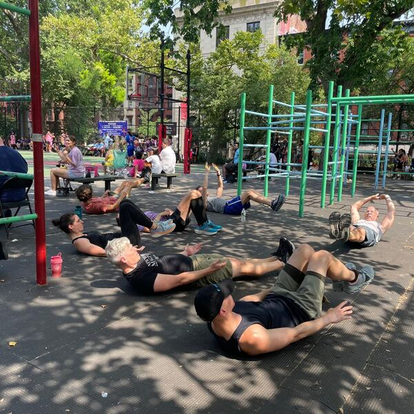
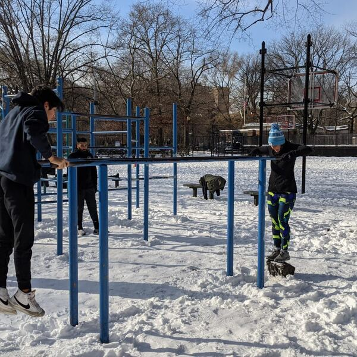
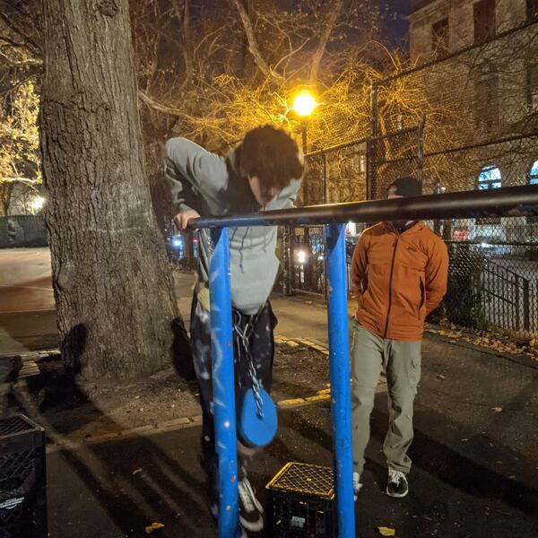
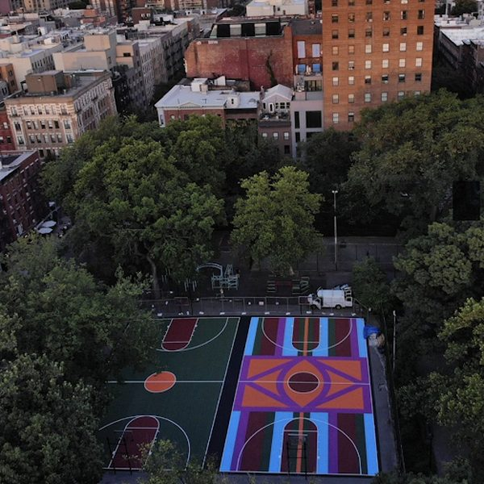
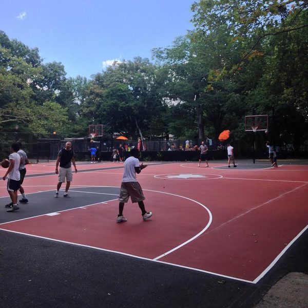
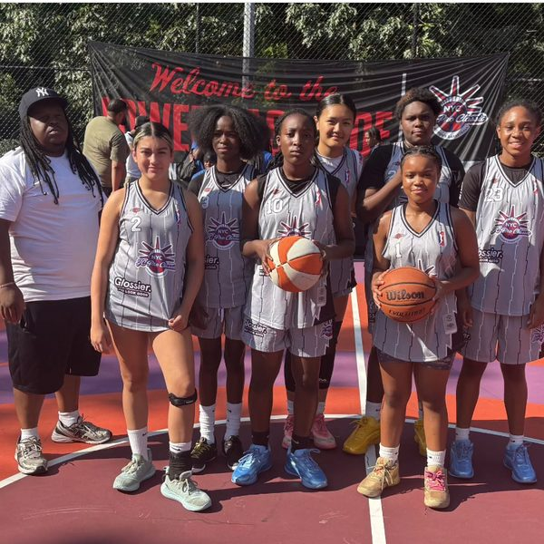
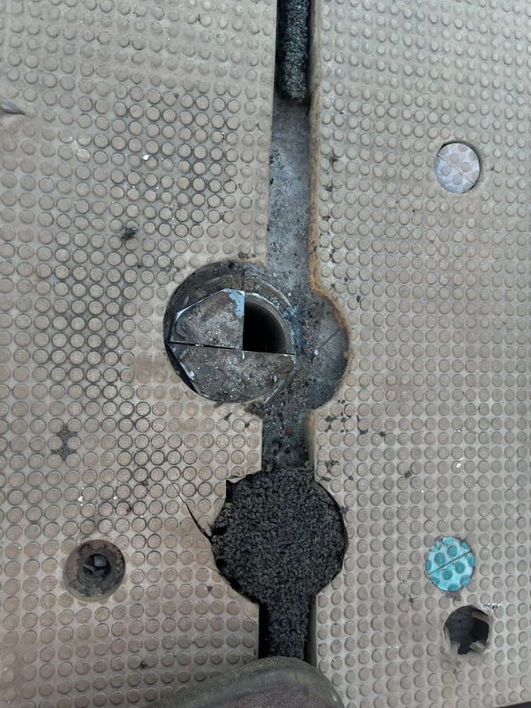
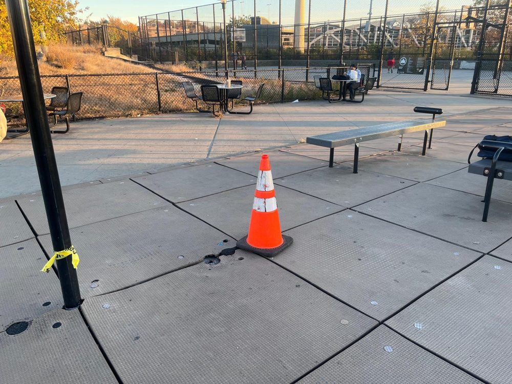
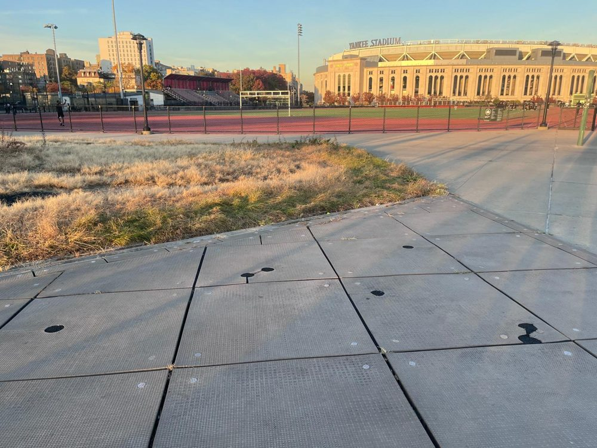

What's going on?
NYC Parks raised almost $10 million to expand and reconstruct the kids' pool at Tompkins Square Park. Money is so abundant NYC Parks officials decided to redo the calisthenics park, the basketball courts, a shaded courtyard and nearby areas. This plan closes everything for two years or more.
Who asked for this?
Nobody asked for this. On the contrary, more than 2,500 3,000 3,500 people have signed a petition asking NYC Parks to remove the calisthenics park from the scope of this project and keep the space accessible during the pool reconstruction. We also want NYC Parks to minimize disruption to basketball players.
Council Member Harvey Epstein and Assembly Member Keith Powers have endorsed these requests. We expect that Senator-elect Grace Lee will join them soon.
Did NYC Parks listen to the community?
Not really. Again and again, and as shown by their own records, Parks recorded unanimous community feedback in favor of keeping the courts and calisthenics park untouched. But then, at the first CB3 meeting, NYC Parks officials argued forcefully for demolishing and rebuilding everything anyway.
Used every day, all year






Basketball photos by EV Grieve and @jcproclassicbasketball
What's so special about these bars and courts?
Residents and park users have a lot to say.
- The bars are high-quality, rock-solid, perfectly-sized, versatile and accessible.
- The bars and courts nurture a vibrant, diverse, inclusive community.
- They are historic, and well-known among calisthenics enthusiasts everywhere.
- Bars and courts are free, and used year-round by people of all ages, athletic abilities, and levels of mobility.
“These aren't just pull up bars. They're therapy, recovery, community and family.”
Jahmal, to the board, Oct 27 · Read the full statement
“The Tompkins Bars embody all the values I want for [my son]. It’s a shared public space open to everyone. It’s diverse. The place is overflowing with mutual support. I’ve never seen anywhere else like it in all my time in NYC… Let’s not destroy an offline community, at a time when it’s never been more necessary or harder to find.”
Joe, written for the board, Oct 27 · Read the full statement
“I am 73 years old, and I have used the monkey bars in Tompkins Square Park since they were installed, to stay in shape and to keep the back problem that kept me in bed for weeks from coming back.”
Sally, written for the board, Oct 27 · Read the full statement
Read more voices from the park →
The community is what's at stake
The bars build a diverse, inclusive community that keeps this corner friendly, vibrant, and healthy. Close it for two years or more and people scatter. We saw it during Covid, when many places never bounced back after the shutdown.
Read more from the community →
What does NYC Parks say?
Now that NYC Parks has money to spend, its staffers decided that the Tompkins bars are broken, expired, non-compliant and non-accessible. They also claim that the area poses a liability risk to the city, and that it sits atop a clogged drainage pipe. The evidence they provide for these claims, however, is slim or absent. And as we show below, NYC Parks’ own records tell a very different story.
1. Durability
Parks itself admits it has not investigated the structural integrity of the bars. Anyone who visits the site, sees how the bars are used, or tries to give them a vigorous shake can attest they are rock-solid.
Even NYC Parks’ own records agree. Parks inspectors checked Tompkins 61 times from May 2000 to August 2026, and Parks staff wrote 3,458 work orders for the park from January 2010 to October 2026. In all that paper trail, Parks never recorded serious damage to the bars. At most, it shows one weld in 2010, which Parks rated as low priority. The bars’ only other problems, worn paint and a worn surface, went away when Parks did basic maintenance. That makes them some of the sturdiest, most dependable outdoor fitness equipment in the city.
2. Accessibility
The area is accessible and is used by people with disabilities or rehabilitating from injury, and by people with strollers, crutches and wheelchairs (we see them there). This is an open-ended calisthenics park, not a weight room where machines have seats, movable weights, hinges and cables that dictate how one should use the equipment. At Tompkins, people adapt the bars to their bodies and levels of mobility. Read our note on accessibility →
Parks’ own records point the same way. When inspectors wrote up the rubber surface under the bars, in 2017 and 2019, they described it as an “accessible area.” And starting in 2008, its inspectors regularly recorded an accessible sign in the park, the last time in January 2019.
3. Compliance
The “code” that the bars allegedly infringe (ASTM F3101) is actually a private voluntary and optional standard (read the footnote). Unlike children's playgrounds, where IPEMA offers independent certification, in the outdoor fitness industry manufacturers self-certify.
4. Liability
Parks says the bars are a liability risk. But risk comes from equipment that fails, and these bars have been in use for nearly 40 years. Such a long record is tangible evidence that the risk is low. New equipment has no record at all. Replacing proven bars with untested ones increases risk instead of reducing it.
5. Drainage
Parks has not shared its pipe inspections. And it told CB3 it could run a new drain line while “minimally disrupting the existing fitness.” So why demolish everything on top?
NYC Parks officials also said that stormwater detention tanks tend to go under basketball courts. NYC keeps data on detention tanks, and NYC Parks’ arguments are not substantiated by the official records. See our note on detention tanks →
At Tompkins, new will most likely be a downgrade
New equipment is not just unknown. Where Parks has installed it, its own records show it is a downgrade. We checked the same kinds of records for 64 other parks with outdoor adult fitness areas. At 40 of them, including many newly renovated ones, Parks found serious, chronic or premature problems. The new equipment comes loose, gets wobbly, or breaks down surprisingly early and surprisingly often.
See examples from Parks’ records, up to five per park
Columbus Park, Manhattan, built 2018
- Aug 2019: “Reattach broken arm of exercise equipment.”
- Nov 2019: “missing hand crank on workout equipment”
- Jul 2023: “exercise hand rings need new bolts”
- Jul 2023: “exercise bars most of them need to be re welded”
Chelsea Park, Manhattan, install date unknown
- Aug 2013: “Repair/Ck Loose pull up bars on Adult PE”
- Oct 2016: “5 loose boards on exercise eq”
- Aug 2017: “Tighten parallel bar on work out equipment.”
- Dec 2021: “Rotted, splintered or jagged, slat on incline board”
Bloomingdale Playground, Manhattan, built 2019
- May 2022: “Bolt missing at adult exercise equipment at Bloomingdale.”
- Oct 2022: “Please repair exercise equipment (Looses)”
- Mar 2024: “Missing latch at exercise station by gate.”
- May 2024: “Exercise equipment, landscape backpress/chest- bolt broken needs to be replaced”
J. Hood Wright Park, Manhattan, built 2018
- Jan 2024: “removed, hand ring”
- Jun 2024: “Missing metal ring strap In fitness area”
- Sep 2024: “Replace Missing gym ring in fitness area in jhood”
- Oct 2024: “handring missing”
- Mar 2025: “RING MISSING ON ACROBATICS APPARATUS IN ADULT EXERCISE AREA”
Fort Tryon Park, Manhattan, built 2019
- Oct 2021: “Repair 1 spinner on Adult Exercise Equipment”
- Sep 2025: “Step pod circle for pull up bars in work out equipment”
- Oct 2025: “Fall PEI 2025 Stepping pod is loose in the work out area.”
- Oct 2025: “Fall PEI 2025. Standing sit up bar screws are loose at the exercise equipment”
- Dec 2025: “Exercise padding on work out equipment damaged. Wear and tear”
Inwood Hill Park, Manhattan, built 2018
- Nov 2024: “Tighten up loose pull up bar”
- Dec 2024: “Secure exercise bar. Place 2 missing bolts”
- Jun 2026: “Tighten up loose bar adult exercise equipment”
Jaime Campiz Playground, Brooklyn, built 2018
- Oct 2021: “station removed, push-up bar”
- Mar 2022: “Sharp protruding, edges due to damaged/missing lower horizontal bar on ex eqpt near BBCT. Close to Hope St and Marcy Ave.”
- Jul 2026: “Repair 1 PE push up bar ratting/loose Exercise Area”
Sunset Park, Brooklyn, built 2018
- Sep 2020: “Replace missing piece exercise equipment see attached”
- Jun 2021: “deliver exercise equipment handle to Rep”
- Mar 2024: “Tighten bolts on exercise equipment there is no tension/resistance”
- Jul 2026: “damaged, 1 of 2 Tai Chi wheels missing”
- Aug 2026: “Repair broken exercise equipment -Play equipt.”
Linden Park, Brooklyn, built 2016
- Jul 2023: “replace cover to pull up station”
- Mar 2024: “Sharp protruding, metal on damaged squat press exercise equipment”
- Aug 2024: “damaged, /missing bar at the squat Press.”
Jacob Joffe Fields, Brooklyn, built 2019
- Sep 2019: “Broken foot rest on exercise equipment ( foot rest is at canarsie park”
- Feb 2020: “replace missing pedal on exercise equipment”
- Aug 2021: “Loose/missing apparatus creating fall hazard, free swinging foot rest and broken equipment partially cautioned off”
- Aug 2021: “damaged, loose pull-up bars (patron complaints)”
- Jun 2022: “Repair broken exercise bar at location- see notes”
Flushing Meadows Corona Park, Mauro fitness area, Queens, built 2019
- Oct 2021: “Kopan1st section of workout equipment- the sitting bench has a missing cap”
- Dec 2021: “Shops/Workout Equipment(Captain's Chair) left armrest is loose”
- Dec 2021: “Shops/Workout equipment bars/Two clamp bolt covers are loose”
- Mar 2023: “Loose cap on bar in fitness section causing pinch hazard”
- Jun 2023: “Shops/Fix/replace adults work out bench loose.”
Bronx Park, Bronx, built 2019
- Sep 2020: “Exercise equipment is broken”
- Sep 2020: “Exercise equipment (BIKE) pedal is broken - See Brian”
- Oct 2020: “Rotted, splintered or jagged, wood on exercise stumps in BBCT area”
- Mar 2021: “Rpr/Rpl all broken exercise equipment”
- Oct 2021: “Exercise equipment. Broken handle. Zone 1/ Brady Playground”
Colucci Playground, Bronx, built 2020
- Sep 2022: “Loose/missing apparatus creating fall hazard, on EE”
- Sep 2022: “Reattach loose cables on fitness equipment DIA #148577”
- Jun 2023: “Work out equipment is broken”
- Sep 2023: “Exercise equipment has damaged handle, see pics”
- Oct 2023: “Pls replace rotted wood slats on sit up station - See Brian”
Van Cortlandt Park, Bronx, built 2024
- Sep 2025: “Remove 3inch protruding metal. adj push up exercise equipment. GD”
- Sep 2025: “exercise pushup bar, support leg spilt in several area. Cloak”
- Oct 2025: “3" metal protruding from the ground. remove. adj to arm pull up”
- Oct 2025: “Missing cap on exercise machine. basketball court area. GD”
Pelham Bay Park, Bronx, built 2017
- Sep 2019: “Peifall19. Mt exercise leg press bar. Broken off. aileen rayn exercise sta.”
- Oct 2019: “PEI 2019-Replace broken leg press unit-broken piece is in the HQ office”
- Nov 2019: “Repair. 1. Exercise bike padel. Missing. Work out sta. Exercise bike.”
- Nov 2020: “Repair. 1. Leg press Exercise sta. Broken off leg bar. Eileen ryan Exercise sta”
- Mar 2021: “PEI SPRING 21 - Broken leg press machine”
Macombs Dam Park, next to Yankee Stadium, shows what that looks like. Parks rebuilt the bars there in 2020. We went in early November 2026 and saw a wreck. Users tell us each hole in these photos used to be a bar that fell while being used for its intended purpose. The remaining ones are quite unstable and seem to pose a safety hazard. This is our future if NYC Parks rebuilds the area. New is not better.



Photos by Nena, Nov 2026
Watch the bars shake. Videos by Nena, Macombs Dam Park, Nov 2026
Maybe you guys are some weirdo NIMBY types?
No. We have no objection to an improved pool for kids, and no objection to climate resilience. We are not opposing the building of new housing either, as that's not even on the agenda. We want to retain an open public space that works. That's why we want CB3 to endorse NYC Parks' original Option 3, which removes the calisthenics park from the scope of the project, with modifications to minimize disruption to basketball players, and to ensure the area remains accessible, as it has always been.
So maybe we are KIMBY: Keep It in My Back Yard.
Let's get a better plan
- Upgrade the pool
- Increase climate resilience
- Remove the bars from the scope of the project, as NYC Parks has already offered to do
- Minimize disruption to basketball players
- Keep the city affordable, accessible and inclusive
In the news
- The Wall Street Journal, videoDoes This Beloved Fitness Park Actually Need Fixing?Nov 2, 2026
- NYCity News ServiceCommunity Rallies for Tompkins Square Park Fitness Center as Park Overhaul Becomes ClearNov 2, 2026
- EV GrieveTompkins Square Park recreation redesign heads back to committee after contentious CB3 meetingOct 29, 2026
- NPR/WNYC Headlines, radioEast Village community board delays action on Tompkins Square Park overhaulOct 28, 2026 · 2pm headlines · 1 min
- Gothamist'If this is what you want': East Village board halts vote on Tompkins Square overhaulOct 28, 2026
- Snake Super Health (Sami Reiss)OS 36: Time running out to #savethebars at TompkinsOct 27, 2026
- AlthouseThe Parks Department sees an old, decaying, noncompliant place. We see versatile, high-quality, high-performance equipment.Oct 26, 2026
- EV GrieveToday in Tompkins Square Park: A meetup to support the bars and courtsOct 25, 2026
- The New York TimesNew Fight at Gritty Manhattan Park Is Over ‘Punk Rock’ Pull-Up BarsOct 25, 2026
- WBAI 99.5 FM, radioFrontline Voices with Rebecca Myles: the Tompkins Square Park renovation and Tue's voteOct 23, 2026 · 15 min · Full episode on WBAI
- Time Out New YorkTompkins Square Park's $10 million makeover will include a kiddie pool, a new outdoor gym and eco upgradesOct 22, 2026 · Reprinted by Yahoo News
- EV GrieveCB3 committee backs major overhaul of Tompkins Square Park recreation areaOct 21, 2026
- NewYorkNewsTompkins Square Park rebuild of pool, courts and outdoor gym wins East Village board committee, over regulars' objectionsOct 17, 2026
- HoodlineTompkins Square Park Renovation Plan Divides East VillageOct 17, 2026
- GothamistTompkins Square Park is getting a makeover. Some say it's too much.Oct 17, 2026
- EV GrieveParks to present 3 options for Tompkins Square recreation areaOct 14, 2026
- EV GrievePetition to preserve Tompkins Square Park fitness area tops 2,000 signaturesJul 27, 2026
- GothamistLatest East Village preservation fight: This pull-up bar in Tompkins Square ParkJul 20, 2026
- WNYC, videoThe fight to preserve the pull-up bars at Tompkins Square ParkJul 20, 2026
- Al Kavadlo, videoThe Iconic Calisthenics Bars at Tompkins Square Park are in Jeopardy (We Need Your Help)May 26, 2026
- EV GrieveParks Department seeks input on Tompkins recreation-area upgradesMay 14, 2026
- The New York Times T Magazine, videoThe Creatives Who Work Out in Tompkins Square ParkMar 23, 2026
- EV GrieveYour turn to weigh in on Tompkins Square Park's next round of upgradesFeb 3, 2026
- Time Out New YorkTompkins Square Park may soon undergo an exciting reconstruction projectJan 29, 2026
- EV GrieveVirtual meeting set for Tompkins mini-pool and basketball courts redesignJan 27, 2026
Documents
- CB3 full board vote record, Oct 27, 2026 (PDF). The Tompkins item starts on page 13 and ends on page 16, "TO REFER BACK TO COMMITTEE."
- Statement by Council Member Harvey Epstein and Assembly Member Keith Powers, Oct 27, 2026 (Instagram). They ask Parks for a modified Option 3.
- CB3 Parks Committee meeting, Oct 15, 2026 (video, YouTube). CB3's official recording.
- NYC Parks presentation to CB3, Oct 15, 2026 (PDF, 17 MB). Budget and funding on page 1, the "debris" on page 23, the "code" footnote on page 24.
- NYC Parks minutes of the tabling session, May 16, 2026 (PDF, 2 pages). Obtained through a FOIL request.
- NYC Parks notes from the Community Input Meeting, Jan 29, 2026 (PDF, 1 page). Obtained through a FOIL request.
- NYC Parks presentation at the Community Input Meeting, Jan 29, 2026 (PDF, 15 MB). Obtained through a FOIL request.